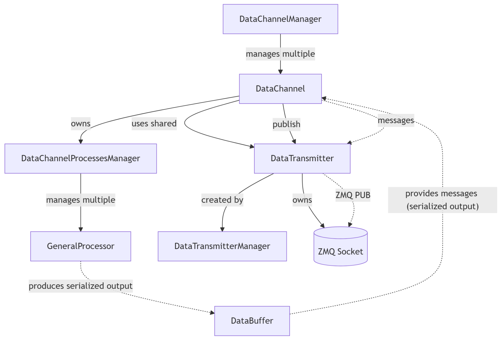
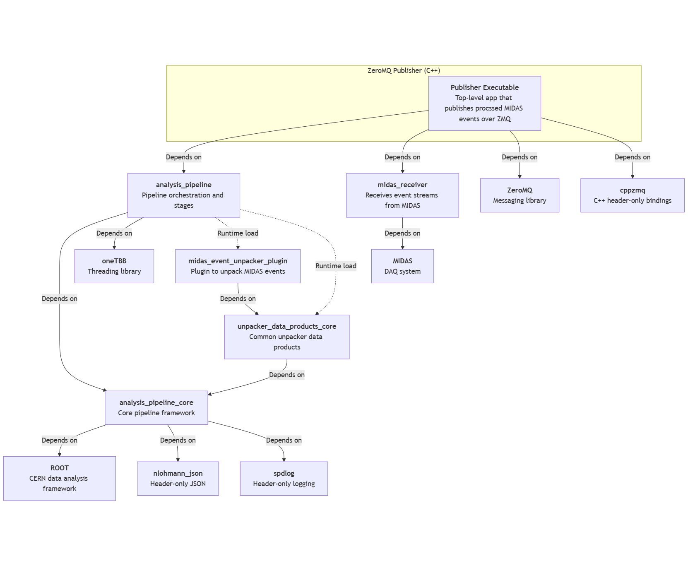
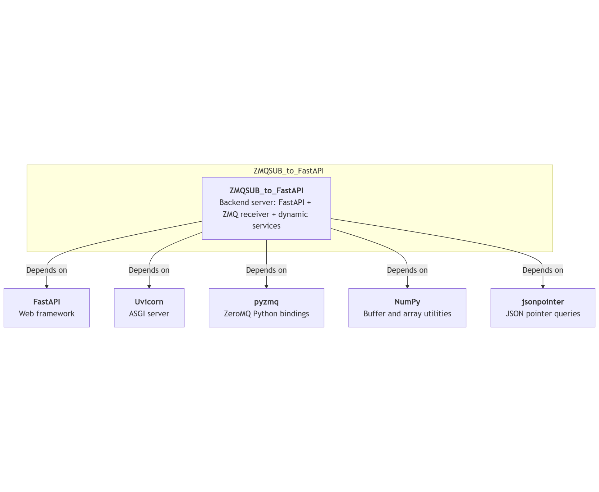
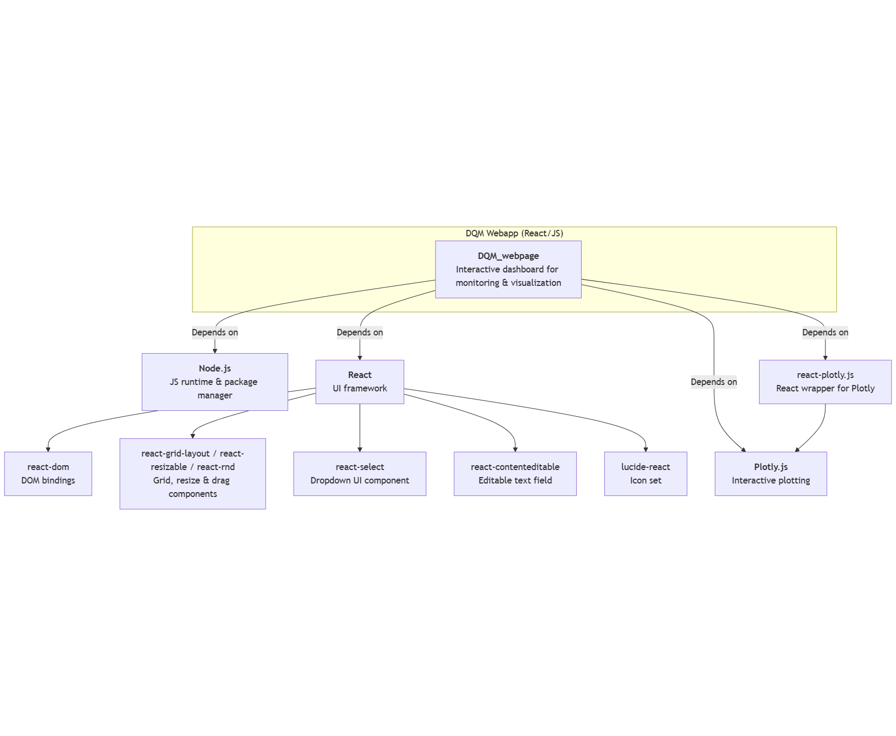

Mermaid Diagram:
flowchart TD
%% Top level
A[DataChannelManager] -->|manages multiple| B[DataChannel]
%% Channel owns processors + buffer
B -->|owns| C[DataChannelProcessesManager]
B -->|uses shared| F[DataTransmitter]
%% Processes manager drives processors
C -->|manages multiple| D[GeneralProcessor]
E[DataBuffer]
%% Transmitter manager provides sockets
F -->|created by| G[DataTransmitterManager]
B -->|publish| F
%% Socket sends to subscribers
F --> |owns| H[(ZMQ Socket)]
%% Flow labels
D -.->|"produces serialized output"| E
E -.->|"provides messages (serialized output)"| B
B -.->|messages| F
F -.->|ZMQ PUB| H
flowchart TD
%% Top level
A[DataChannelManager] -->|manages multiple| B[DataChannel]
%% Channel owns processors + buffer
B -->|owns| C[DataChannelProcessesManager]
B -->|uses shared| F[DataTransmitter]
%% Processes manager drives processors
C -->|manages multiple| D[GeneralProcessor]
E[DataBuffer]
%% Transmitter manager provides sockets
F -->|created by| G[DataTransmitterManager]
B -->|publish| F
%% Socket sends to subscribers
F --> |owns| H[(ZMQ Socket)]
%% Flow labels
D -.->|"produces serialized output"| E
E -.->|"provides messages (serialized output)"| B
B -.->|messages| F
F -.->|ZMQ PUB| H

DQM webpage Wiki Page Outline
Home
– Project overview, badges, screenshots.
– Quick links to all other pages.
Getting Started
– Install prerequisites.
– Clone, install, run.
– Access at localhost:3000.
Dashboard Layout
– Tabs, adding/deleting.
– Dragging/resizing figures (FigureGrid, FigureTile).
– Layout save/reset/export.
Figures
– Base classes (Figure, Plot, Table).
– Settings system.
– Example: waveform traces, histograms.
Plugin System
– Concept of plugins.
– Loading methods (ES, eval, script).
– Default plugins, adding/removing/resetting.
– Export/import configs.
UI Tutorial ✅ (new page)
– Step-by-step with screenshots:
Launch dashboard.
Collapse/expand Sidebar.
Add a figure from dropdown.
Drag & resize a figure tile.
Edit a figure title (double click, FigureTitle).
Open figure settings (SettingsMenu).
Create/delete tabs (TabsBar in Dashboard).
Add/remove plugins via modals.
– End with saving/exporting layout.
Creating Custom Figures (Local)
– Add .jsx to /src/figures.
– Auto-registration.
– Example code.
Creating Custom Figure Plugins
– Structure a plugin repo.
– Rollup + Babel build.
– Expose PluginRegister.
– Publish via GitHub/jsDelivr.
Managers and Registries (Architecture)
– FigureManager, FactoryManager, RegistryManager.
– Interaction with Dashboard and Sidebar.
Dependency diagram for ZeroMQ Publisher
flowchart TD
subgraph Publisher["ZeroMQ Publisher (C++)"]
P["<b>Publisher Executable</b><br>Top-level app that publishes procssed MIDAS events over ZMQ"]
end
%% System / external
ROOT["<b><a href='https://root.cern/'>ROOT</a></b><br>CERN data analysis framework"]
ZeroMQ["<b><a href='https://zeromq.org/'>ZeroMQ</a></b><br>Messaging library"]
cppzmq["<b><a href='https://github.com/zeromq/cppzmq'>cppzmq</a></b><br>C++ header-only bindings"]
TBB["<b><a href='https://github.com/oneapi-src/oneTBB'>oneTBB</a></b><br>Threading library"]
MIDAS["<b><a href='https://midas.triumf.ca/'>MIDAS</a></b><br>DAQ system"]
%% CPM/core deps
APcore["<b><a href='https://github.com/jaca230/analysis_pipeline_core'>analysis_pipeline_core</a></b><br>Core pipeline framework "]
JSON["<b><a href='https://github.com/nlohmann/json'>nlohmann_json</a></b><br>Header-only JSON"]
SPDLOG["<b><a href='https://github.com/gabime/spdlog'>spdlog</a></b><br>Header-only logging"]
AP["<b><a href='https://github.com/jaca230/analysis_pipeline'>analysis_pipeline</a></b><br>Pipeline orchestration and stages"]
MR["<b><a href='https://github.com/jaca230/midas_receiver'>midas_receiver</a></b><br>Receives event streams from MIDAS"]
UPcore["<b><a href='https://github.com/jaca230/unpacker_data_products_core'>unpacker_data_products_core</a></b><br>Common unpacker data products"]
MUplugin["<b><a href='https://github.com/jaca230/midas_event_unpacker_plugin'>midas_event_unpacker_plugin</a></b><br>Plugin to unpack MIDAS events"]
%% Core dependencies
APcore -->|Depends on| ROOT
APcore -->|Depends on| JSON
APcore -->|Depends on| SPDLOG
AP -->|Depends on| APcore
AP -->|Depends on| TBB
UPcore -->|Depends on| APcore
MUplugin -->|Depends on| UPcore
MR -->|Depends on| MIDAS
%% Publisher
P -->|Depends on| AP
P -->|Depends on| MR
P -->|Depends on| ZeroMQ
P -->|Depends on| cppzmq
%% Runtime plugin loading
AP -.->|Runtime load| MUplugin
AP -.->|Runtime load| UPcore
flowchart TD
subgraph Publisher["ZeroMQ Publisher (C++)"]
P["<b>Publisher Executable</b><br>Top-level app that publishes procssed MIDAS events over ZMQ"]
end
%% System / external
ROOT["<b><a href='https://root.cern/'>ROOT</a></b><br>CERN data analysis framework"]
ZeroMQ["<b><a href='https://zeromq.org/'>ZeroMQ</a></b><br>Messaging library"]
cppzmq["<b><a href='https://github.com/zeromq/cppzmq'>cppzmq</a></b><br>C++ header-only bindings"]
TBB["<b><a href='https://github.com/oneapi-src/oneTBB'>oneTBB</a></b><br>Threading library"]
MIDAS["<b><a href='https://midas.triumf.ca/'>MIDAS</a></b><br>DAQ system"]
%% CPM/core deps
APcore["<b><a href='https://github.com/jaca230/analysis_pipeline_core'>analysis_pipeline_core</a></b><br>Core pipeline framework "]
JSON["<b><a href='https://github.com/nlohmann/json'>nlohmann_json</a></b><br>Header-only JSON"]
SPDLOG["<b><a href='https://github.com/gabime/spdlog'>spdlog</a></b><br>Header-only logging"]
AP["<b><a href='https://github.com/jaca230/analysis_pipeline'>analysis_pipeline</a></b><br>Pipeline orchestration and stages"]
MR["<b><a href='https://github.com/jaca230/midas_receiver'>midas_receiver</a></b><br>Receives event streams from MIDAS"]
UPcore["<b><a href='https://github.com/jaca230/unpacker_data_products_core'>unpacker_data_products_core</a></b><br>Common unpacker data products"]
MUplugin["<b><a href='https://github.com/jaca230/midas_event_unpacker_plugin'>midas_event_unpacker_plugin</a></b><br>Plugin to unpack MIDAS events"]
%% Core dependencies
APcore -->|Depends on| ROOT
APcore -->|Depends on| JSON
APcore -->|Depends on| SPDLOG
AP -->|Depends on| APcore
AP -->|Depends on| TBB
UPcore -->|Depends on| APcore
MUplugin -->|Depends on| UPcore
MR -->|Depends on| MIDAS
%% Publisher
P -->|Depends on| AP
P -->|Depends on| MR
P -->|Depends on| ZeroMQ
P -->|Depends on| cppzmq
%% Runtime plugin loading
AP -.->|Runtime load| MUplugin
AP -.->|Runtime load| UPcore

Dependency diagram for ZMQSUB_to_FASTAPI
flowchart TD
subgraph Backend["ZMQSUB_to_FastAPI (Python)"]
B["<b><a href='https://github.com/jaca230/ZMQSUB_to_FastAPI'>ZMQSUB_to_FastAPI</a></b><br>Backend server: FastAPI + ZMQ receiver + dynamic services"]
end
%% External deps
FastAPI["<b><a href='https://fastapi.tiangolo.com/'>FastAPI</a></b><br>Web framework"]
Uvicorn["<b><a href='https://www.uvicorn.org/'>Uvicorn</a></b><br>ASGI server"]
PyZMQ["<b><a href='https://github.com/zeromq/pyzmq'>pyzmq</a></b><br>ZeroMQ Python bindings"]
NumPy["<b><a href='https://numpy.org/'>NumPy</a></b><br>Buffer and array utilities"]
JSONptr["<b><a href='https://github.com/stefankoegl/python-json-pointer'>jsonpointer</a></b><br>JSON pointer queries"]
%% Edges external
B -->|Depends on| FastAPI
B -->|Depends on| Uvicorn
B -->|Depends on| PyZMQ
B -->|Depends on| NumPy
B -->|Depends on| JSONptr

Dependency diagram for DQM React based webserver
flowchart TD
subgraph Frontend["DQM Webapp (React/JS)"]
F["<b><a href='https://github.com/jaca230/DQM_webpage'>DQM_webpage</a></b><br>Interactive dashboard for monitoring & visualization"]
end
%% Core runtime
Node["<b><a href='https://nodejs.org/'>Node.js</a></b><br>JS runtime & package manager"]
%% React ecosystem
React["<b><a href='https://react.dev/'>React</a></b><br>UI framework"]
ReactDOM["react-dom<br/>DOM bindings"]
LayoutLibs["react-grid-layout / react-resizable / react-rnd<br/>Grid, resize & drag components"]
ReactSelect["react-select<br/>Dropdown UI component"]
ContentEditable["react-contenteditable<br/>Editable text field"]
Lucide["lucide-react<br/>Icon set"]
%% Plotting
Plotly["<b><a href='https://plotly.com/javascript/'>Plotly.js</a></b><br>Interactive plotting"]
ReactPlotly["react-plotly.js<br/>React wrapper for Plotly"]
%% Dependencies
F -->|Depends on| Node
F -->|Depends on| React
React --> ReactDOM
React --> LayoutLibs
React --> ReactSelect
React --> ContentEditable
React --> Lucide
F -->|Depends on| Plotly
F -->|Depends on| ReactPlotly
ReactPlotly --> Plotly
flowchart TD
subgraph Frontend["DQM Webapp (React/JS)"]
F["<b><a href='https://github.com/jaca230/DQM_webpage'>DQM_webpage</a></b><br>Interactive dashboard for monitoring & visualization"]
end
%% Core runtime
Node["<b><a href='https://nodejs.org/'>Node.js</a></b><br>JS runtime & package manager"]
%% React ecosystem
React["<b><a href='https://react.dev/'>React</a></b><br>UI framework"]
ReactDOM["react-dom<br/>DOM bindings"]
LayoutLibs["react-grid-layout / react-resizable / react-rnd<br/>Grid, resize & drag components"]
ReactSelect["react-select<br/>Dropdown UI component"]
ContentEditable["react-contenteditable<br/>Editable text field"]
Lucide["lucide-react<br/>Icon set"]
%% Plotting
Plotly["<b><a href='https://plotly.com/javascript/'>Plotly.js</a></b><br>Interactive plotting"]
ReactPlotly["react-plotly.js<br/>React wrapper for Plotly"]
%% Dependencies
F -->|Depends on| Node
F -->|Depends on| React
React --> ReactDOM
React --> LayoutLibs
React --> ReactSelect
React --> ContentEditable
React --> Lucide
F -->|Depends on| Plotly
F -->|Depends on| ReactPlotly
ReactPlotly --> Plotly

Some questions for SAMPic experts:
fe_index 0,1 or 1,3?Init_CrateCalibParams() before operation?EventStruct into their DAQ event (i.e. copy ~0.5–1 MB/event regardless of occupancy)?ML_Frame[] to build a more compact event record?ML_Frame[] → channel traces?EventStruct?EventStruct path?EventStruct into MIDAS banks, orML_Frame[] and build custom MIDAS structures?#ifndef SAMPIC_CONFIG_H
#define SAMPIC_CONFIG_H
#include <string>
#include <cstdint>
#include <map>
extern "C" {
#include <SAMPIC_256Ch_Type.h>
}
// ==============================
// Channel (lowest level)
// ==============================
struct SampicChannelConfig {
bool enabled = true; // Global enable for channel
SAMPIC_ChannelTriggerMode_t trigger_mode = SAMPIC_CHANNEL_EXT_TRIGGER_MODE; // SAMPIC256CH_SetSampicChannelTriggerMode
float internal_threshold = 0.0; // SAMPIC256CH_SetSampicChannelInternalThreshold
EdgeType_t trigger_edge = RISING_EDGE; // SAMPIC256CH_SetChannelSelflTriggerEdge
bool external_threshold_mode = false; // SAMPIC256CH_SetSampicExternalThresholdMode
bool enable_for_central_trigger = true; // SAMPIC256CH_SetSampicChannelSourceForCT
bool pulse_mode = false; // SAMPIC256CH_SetSampicChannelPulseMode
};
using SampicChannelSettings = std::map<std::string, SampicChannelConfig>;
// ==============================
// Chip (contains channels)
// ==============================
struct SampicChipConfig {
bool enabled = true; // Global enable for chip
float baseline_reference = DEFAULT_SAMPIC_BASELINE; // SAMPIC256CH_SetBaselineReference
float external_threshold = 0.5; // SAMPIC256CH_SetSampicExternalThreshold
SAMPIC_TOTRange_t tot_range = SAMPIC_TOT_RANGE_MAX_25_NS; // SAMPIC256CH_SetSampicTOTRange
bool enable_post_trigger = true; // SAMPIC256CH_SetSampicPostTrigParams
int post_trigger_value = 7; // SAMPIC256CH_SetSampicPostTrigParams
SampicCentralTriggerMode_t central_trigger_mode = CENTRAL_OR; // SAMPIC256CH_SetSampicCentralTriggerMode
SampicCentralTriggerEffect_t central_trigger_effect = TRIG_CHANNEL_ONLY_IF_PARTICIPATING_TO_CT; // SAMPIC256CH_SetSampicCentralTriggerEffect
SAMPIC_CT_PrimitivesMode_t primitives_mode = RAW_PRIMITIVES_FOR_CT; // SAMPIC256CH_SetSampicCentralTriggerPrimitivesOptions
int primitives_gate_length = DEFAULT_PRIMITIVES_GATE_LENGTH; // SAMPIC256CH_SetSampicCentralTriggerPrimitivesOptions
bool tot_filter_enable = false; // SAMPIC256CH_SetSampicTOTFilterParams
bool tot_wide_cap = false; // SAMPIC256CH_SetSampicTOTFilterParams
float tot_min_width_ns = 0.0; // SAMPIC256CH_SetSampicTOTFilterParams
SampicChannelSettings channels {
{"channel0", {}}, {"channel1", {}}, {"channel2", {}}, {"channel3", {}},
{"channel4", {}}, {"channel5", {}}, {"channel6", {}}, {"channel7", {}},
{"channel8", {}}, {"channel9", {}}, {"channel10", {}}, {"channel11", {}},
{"channel12", {}}, {"channel13", {}}, {"channel14", {}}, {"channel15", {}}
};
};
using SampicChipSettings = std::map<std::string, SampicChipConfig>;
// ==============================
// Board (contains chips)
// ==============================
struct SampicFrontEndConfig {
bool enabled = true; // Global enable for this FE board
FebGlobalTrigger_t global_trigger_option = FEB_GLOBAL_TRIGGER_IS_L2; // SAMPIC256CH_SetFrontEndBoardGlobalTriggerOption
unsigned char level2_ext_trig_gate = DEFAULT_EXT_TRIG_GATE; // SAMPIC256CH_SetLevel2ExtTrigGate
bool level2_coincidence_ext_gate = false; // SAMPIC256CH_SetLevel2CoincidenceModeWithExtTrigGate
SampicChipSettings sampics {
{"sampic0", {}}, {"sampic1", {}}, {"sampic2", {}}, {"sampic3", {}}
};
};
using SampicFrontEndSettings = std::map<std::string, SampicFrontEndConfig>;
// ==============================
// Crate (top-level system)
// ==============================
struct SampicSystemSettings {
std::string ip_address = "192.168.0.4"; //DEFAULT_CTRL_IP_ADDRESS
int port = DEFAULT_UDP_CTRL_PORT; // UDP control port
ConnectionType_t connection_type = UDP_CONNECTION; // SAMPIC256CH_OpenCrateConnection
ControlType_t control_type = CTRL_AND_DAQ; // SAMPIC256CH_OpenCrateConnection
// Acquisition
int sampling_frequency_mhz = DEFAULT_FREQ_ECH; // SAMPIC256CH_SetSamplingFrequency
bool use_external_clock = false;
int frames_per_block = MAX_NB_OF_FRAMES_PER_BLOCK; // SAMPIC256CH_SetNbOfFramesPerBlock
bool enable_tot = false; // SAMPIC256CH_SetTOTMeasurementMode
int adc_bits = DEFAULT_ADC_NB_OF_BITS; // Set_SystemADCNbOfBits
bool smart_read_mode = false; // SAMPIC256CH_SetSmartReadMode
int read_offset = 0;
int samples_to_read = MAX_NB_OF_SAMPLES;
// Trigger
ExternalTriggerType_t external_trigger_type = SOFTWARE; // SAMPIC256CH_SetExternalTriggerType
SignalLevel_t signal_level = TTL_SIG; // SAMPIC256CH_SetExternalTriggerSigLevel
EdgeType_t trigger_edge = RISING_EDGE; // SAMPIC256CH_SetExternalTriggerEdge
std::uint8_t triggers_per_event = DEFAULT_NB_OF_TRIGGERS_PER_TRIGGER_EVENT; // SAMPIC256CH_SetMinNbOfTriggersPerEvent
bool level2_trigger_build = false; // SAMPIC256CH_SetLevel2TriggerBuildOption
bool level3_trigger_build = false; // SAMPIC256CH_SetLevel3TriggerLogic
SampicTriggerOption_t trigger_option = SAMPIC_TRIGGER_IS_L1; // SAMPIC256CH_SetSampicTriggerOption
unsigned char level3_ext_trig_gate = DEFAULT_EXT_TRIG_GATE; // SAMPIC256CH_SetLevel3ExtTrigGate
bool level3_coincidence_ext_gate = false; // SAMPIC256CH_SetLevel3CoincidenceModeWithExtTrigGate
unsigned char primitives_gate_length = DEFAULT_PRIMITIVES_GATE_LENGTH; // SAMPIC256CH_SetPrimitivesGateLength
unsigned char latency_gate_length = DEFAULT_LEVEL_2_LATENCY_GATE; // SAMPIC256CH_SetLevel2LatencyGateLength
// Pulser
bool pulser_enable = false; // SAMPIC256CH_SetPulserMode
PulserSourceType_t pulser_source = PULSER_SRC_IS_SOFT_CMD;
bool pulser_synchronous = true;
int pulser_period = DEFAULT_AUTO_PULSE_PERIOD; // SAMPIC256CH_SetAutoPulserPeriod
unsigned char pulser_width = DEFAULT_PULSER_WIDTH; // SAMPIC256CH_SetSampicPulserWidth
// Sync + corrections
bool sync_mode = false; // SAMPIC256CH_SetCrateSycnhronisationMode
bool master_mode = false;
bool coincidence_mode = false;
EdgeType_t sync_edge = RISING_EDGE; // SAMPIC256CH_SetExternalSyncEdge
SignalLevel_t sync_level = TTL_SIG; // SAMPIC256CH_SetExternalSyncSigLevel
bool adc_linearity_correction = false; // SAMPIC256CH_SetCrateCorrectionLevels
bool time_inl_correction = false;
bool residual_pedestal_correction = false;
std::string calibration_directory = "."; // SAMPIC256CH_LoadAllCalibValuesFromFiles
SampicFrontEndSettings front_end_boards {
{"feb0", {}}, {"feb1", {}}, {"feb2", {}}, {"feb3", {}}
};
bool verbose = false; // for logging verbosity
};
#endif // SAMPIC_CONFIG_H#ifndef SAMPIC_CONFIG_H
#define SAMPIC_CONFIG_H
#include <string>
#include <cstdint>
#include <map>
extern "C" {
#include <SAMPIC_256Ch_Type.h>
}
// ==============================
// Channel (lowest level)
// ==============================
struct SampicChannelConfig {
bool enabled = true; // Global enable for channel
SAMPIC_ChannelTriggerMode_t trigger_mode = SAMPIC_CHANNEL_EXT_TRIGGER_MODE; // SAMPIC256CH_SetSampicChannelTriggerMode
float internal_threshold = 0.0; // SAMPIC256CH_SetSampicChannelInternalThreshold
EdgeType_t trigger_edge = RISING_EDGE; // SAMPIC256CH_SetChannelSelflTriggerEdge
bool external_threshold_mode = false; // SAMPIC256CH_SetSampicExternalThresholdMode
bool enable_for_central_trigger = true; // SAMPIC256CH_SetSampicChannelSourceForCT
bool pulse_mode = false; // SAMPIC256CH_SetSampicChannelPulseMode
};
using SampicChannelSettings = std::map<std::string, SampicChannelConfig>;
// ==============================
// Chip (contains channels)
// ==============================
struct SampicChipConfig {
bool enabled = true; // Global enable for chip
float baseline_reference = DEFAULT_SAMPIC_BASELINE; // SAMPIC256CH_SetBaselineReference
float external_threshold = 0.5; // SAMPIC256CH_SetSampicExternalThreshold
SAMPIC_TOTRange_t tot_range = SAMPIC_TOT_RANGE_MAX_25_NS; // SAMPIC256CH_SetSampicTOTRange
bool enable_post_trigger = true; // SAMPIC256CH_SetSampicPostTrigParams
int post_trigger_value = 7; // SAMPIC256CH_SetSampicPostTrigParams
SampicCentralTriggerMode_t central_trigger_mode = CENTRAL_OR; // SAMPIC256CH_SetSampicCentralTriggerMode
SampicCentralTriggerEffect_t central_trigger_effect = TRIG_CHANNEL_ONLY_IF_PARTICIPATING_TO_CT; // SAMPIC256CH_SetSampicCentralTriggerEffect
SAMPIC_CT_PrimitivesMode_t primitives_mode = RAW_PRIMITIVES_FOR_CT; // SAMPIC256CH_SetSampicCentralTriggerPrimitivesOptions
int primitives_gate_length = DEFAULT_PRIMITIVES_GATE_LENGTH; // SAMPIC256CH_SetSampicCentralTriggerPrimitivesOptions
bool tot_filter_enable = false; // SAMPIC256CH_SetSampicTOTFilterParams
bool tot_wide_cap = false; // SAMPIC256CH_SetSampicTOTFilterParams
float tot_min_width_ns = 0.0; // SAMPIC256CH_SetSampicTOTFilterParams
SampicChannelSettings channels {
{"channel0", {}}, {"channel1", {}}, {"channel2", {}}, {"channel3", {}},
{"channel4", {}}, {"channel5", {}}, {"channel6", {}}, {"channel7", {}},
{"channel8", {}}, {"channel9", {}}, {"channel10", {}}, {"channel11", {}},
{"channel12", {}}, {"channel13", {}}, {"channel14", {}}, {"channel15", {}}
};
};
using SampicChipSettings = std::map<std::string, SampicChipConfig>;
// ==============================
// Board (contains chips)
// ==============================
struct SampicFrontEndConfig {
bool enabled = true; // Global enable for this FE board
FebGlobalTrigger_t global_trigger_option = FEB_GLOBAL_TRIGGER_IS_L2; // SAMPIC256CH_SetFrontEndBoardGlobalTriggerOption
unsigned char level2_ext_trig_gate = DEFAULT_EXT_TRIG_GATE; // SAMPIC256CH_SetLevel2ExtTrigGate
bool level2_coincidence_ext_gate = false; // SAMPIC256CH_SetLevel2CoincidenceModeWithExtTrigGate
SampicChipSettings sampics {
{"sampic0", {}}, {"sampic1", {}}, {"sampic2", {}}, {"sampic3", {}}
};
};
using SampicFrontEndSettings = std::map<std::string, SampicFrontEndConfig>;
// ==============================
// Crate (top-level system)
// ==============================
struct SampicSystemSettings {
std::string ip_address = "192.168.0.4"; //DEFAULT_CTRL_IP_ADDRESS
int port = DEFAULT_UDP_CTRL_PORT; // UDP control port
ConnectionType_t connection_type = UDP_CONNECTION; // SAMPIC256CH_OpenCrateConnection
ControlType_t control_type = CTRL_AND_DAQ; // SAMPIC256CH_OpenCrateConnection
// Acquisition
int sampling_frequency_mhz = DEFAULT_FREQ_ECH; // SAMPIC256CH_SetSamplingFrequency
bool use_external_clock = false;
int frames_per_block = MAX_NB_OF_FRAMES_PER_BLOCK; // SAMPIC256CH_SetNbOfFramesPerBlock
bool enable_tot = false; // SAMPIC256CH_SetTOTMeasurementMode
int adc_bits = DEFAULT_ADC_NB_OF_BITS; // Set_SystemADCNbOfBits
bool smart_read_mode = false; // SAMPIC256CH_SetSmartReadMode
int read_offset = 0;
int samples_to_read = MAX_NB_OF_SAMPLES;
// Trigger
ExternalTriggerType_t external_trigger_type = SOFTWARE; // SAMPIC256CH_SetExternalTriggerType
SignalLevel_t signal_level = TTL_SIG; // SAMPIC256CH_SetExternalTriggerSigLevel
EdgeType_t trigger_edge = RISING_EDGE; // SAMPIC256CH_SetExternalTriggerEdge
std::uint8_t triggers_per_event = DEFAULT_NB_OF_TRIGGERS_PER_TRIGGER_EVENT; // SAMPIC256CH_SetMinNbOfTriggersPerEvent
bool level2_trigger_build = false; // SAMPIC256CH_SetLevel2TriggerBuildOption
bool level3_trigger_build = false; // SAMPIC256CH_SetLevel3TriggerLogic
SampicTriggerOption_t trigger_option = SAMPIC_TRIGGER_IS_L1; // SAMPIC256CH_SetSampicTriggerOption
unsigned char level3_ext_trig_gate = DEFAULT_EXT_TRIG_GATE; // SAMPIC256CH_SetLevel3ExtTrigGate
bool level3_coincidence_ext_gate = false; // SAMPIC256CH_SetLevel3CoincidenceModeWithExtTrigGate
unsigned char primitives_gate_length = DEFAULT_PRIMITIVES_GATE_LENGTH; // SAMPIC256CH_SetPrimitivesGateLength
unsigned char latency_gate_length = DEFAULT_LEVEL_2_LATENCY_GATE; // SAMPIC256CH_SetLevel2LatencyGateLength
// Pulser
bool pulser_enable = false; // SAMPIC256CH_SetPulserMode
PulserSourceType_t pulser_source = PULSER_SRC_IS_SOFT_CMD;
bool pulser_synchronous = true;
int pulser_period = DEFAULT_AUTO_PULSE_PERIOD; // SAMPIC256CH_SetAutoPulserPeriod
unsigned char pulser_width = DEFAULT_PULSER_WIDTH; // SAMPIC256CH_SetSampicPulserWidth
// Sync + corrections
bool sync_mode = false; // SAMPIC256CH_SetCrateSycnhronisationMode
bool master_mode = false;
bool coincidence_mode = false;
EdgeType_t sync_edge = RISING_EDGE; // SAMPIC256CH_SetExternalSyncEdge
SignalLevel_t sync_level = TTL_SIG; // SAMPIC256CH_SetExternalSyncSigLevel
bool adc_linearity_correction = false; // SAMPIC256CH_SetCrateCorrectionLevels
bool time_inl_correction = false;
bool residual_pedestal_correction = false;
std::string calibration_directory = "."; // SAMPIC256CH_LoadAllCalibValuesFromFiles
SampicFrontEndSettings front_end_boards {
{"feb0", {}}, {"feb1", {}}, {"feb2", {}}, {"feb3", {}}
};
bool verbose = false; // for logging verbosity
};
#endif // SAMPIC_CONFIG_HBusReadWords on different FEBs simultaneously?Use the getters to determine default parameters, don't set something if getter returns same value as in ODB, this will save time when setting things.
Some settings explanations:
Frames per block:
each sampic waits til it has 31 (parameterized) events before it sends it.
triggers per event
trigger counter must be on to see this(?)
127 is the max
look for trigger counter switch, set parameter for it
samples to read
max samples to read is 64
part of the smart read mode settings
setting it to below 64 you need to set the offset to make sure things are in a "good" order
external trigger type
Right now it's software
But can be set to internal as well
For changing the trigger to internal trigger mode, the following need to be set:
baseline reference
internal threshold
trigger edge
trigger mode
It seems reading everything is viable (all least for the test beam use case).
Pulser mode
pulser mode will send signals to channel from the FPGA directly, no need for an external signal in a channel,